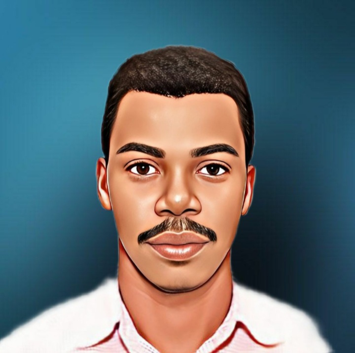

Curriculum Vitae

- CELICOURT Louine
- 116, Cote Plage 26, Carrefour
- Haitien
- +50940990049
- louinecelicourt@gmail.com
Developpeur Full-Stack
Python & Django
Formations
2016-2020 : Sciences Informatique - Diplome
Universite INUKA - Haiti
2020 : Cybersecurity Essentials - Attestation
Cisco Networking Academy, En
ligne
2022 : CCNAv7 : Introduction aux réseaux - Attestation
Cisco Networking Academy,
En ligne
Experiences Professionnelles
Atalou MicroSystem
4 mois
Stage support Software & Network
- Maintenance Logiciel chez les Clients
- Intallation & Reparation infrastructure Reseaux
- Installation & Reparation Hadware Informatique
EZ-tech Plus
3 ans
Professeur
- Informatique Bureautique
- Depannage d'ordinateur
- Inro Reseaux Informatique
Competences
- HTML
- CSS
- Javascript
- Developpement front-end
Qualites
- Honnêteté & Rigoureux
- Flexibilité, Capacité d' adaptation
- Ponctualité & Forte implication
- Autonome
- Bienveillant